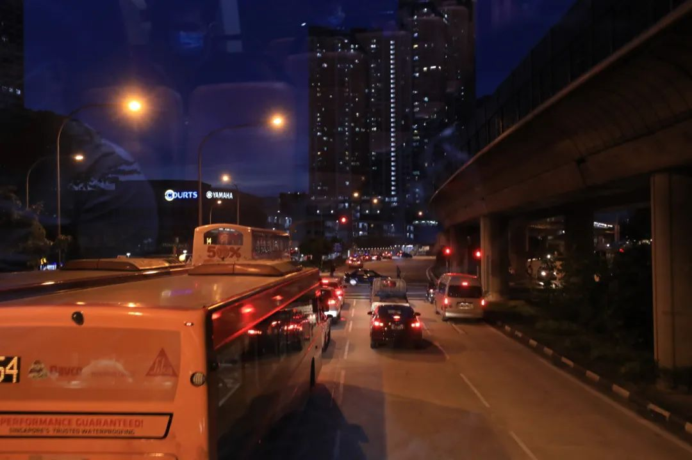
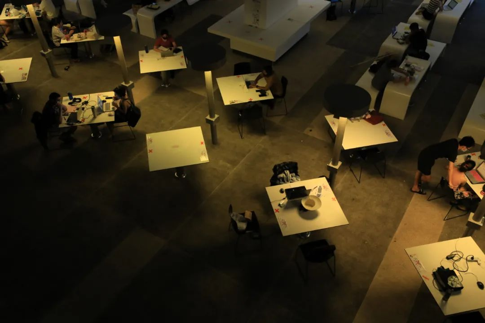
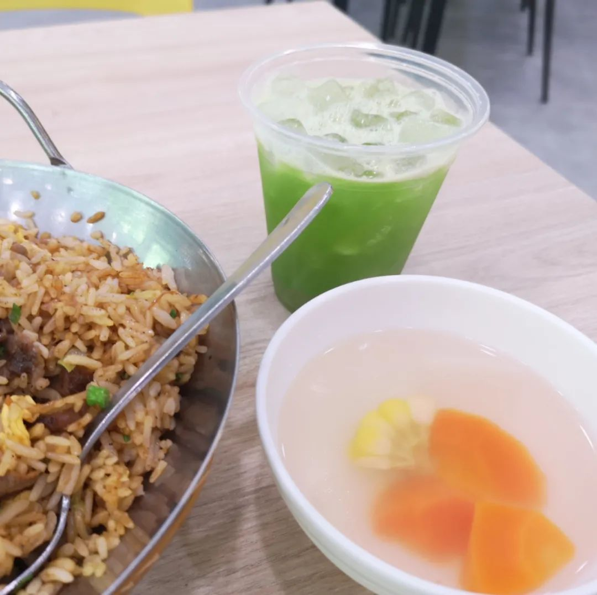
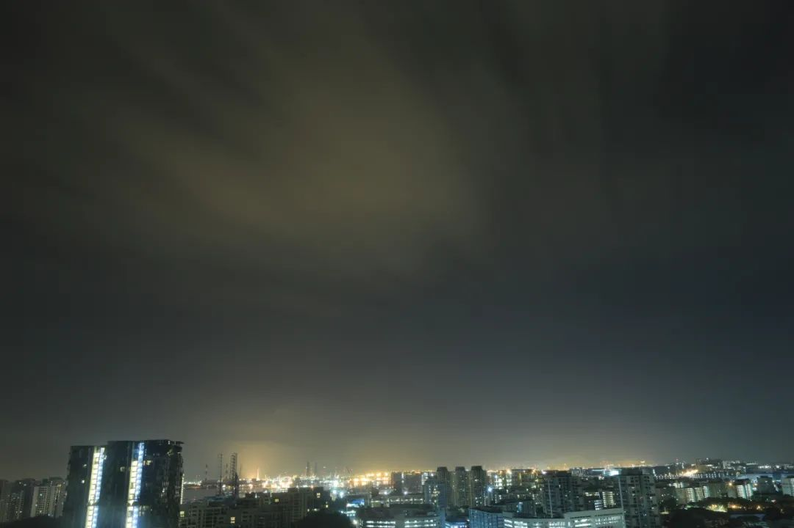
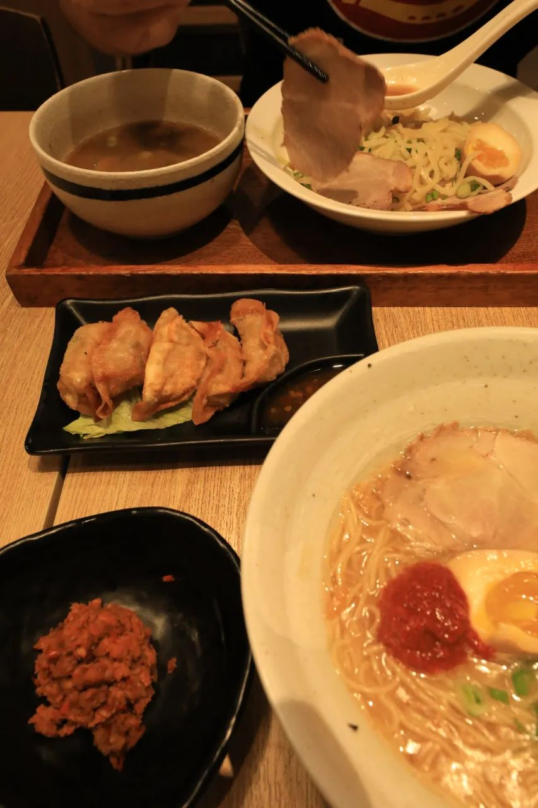

晚上摸到头发，油得感觉要擦得满键盘都是。于是保存完正在做的，认真备份好。把现在打开了的窗口一个一个叉掉，确信正在进行的进程都好好结束了。最后一个关掉的总是音乐播放器，摇完最后一首歌，关电源。
从冰箱里拿出新冰镇的纯净水，算是一种醒脑吧。这样可以看清楚我还有没有零食存货在冰箱里。点过洗漱物品，把需要换洗放进脏衣篮，调一个合适的水温。有时候会在窗口看一会。当然是风比较大的时候，热带的自然风总没有理由把你吹感冒，就这么让恒温蒸发带走湿和热。觉得差不多了就返回房里。差不多也只是一种感觉，久就久一点，也说不定不存在这个环节。整理好床垫、眼贴，水杯里的水倒满，窗帘降到一个合理的高度。坐到椅子上，拉到桌前，按开电源，把二三十分钟前结束的工程文件打开。
一天又一天。每天这样的剧情都在一样地上演。朋友圈都已经入秋了，而我只有下雨的夏天和出太阳的夏天。虽然还有这么久，但是我已经提前预定想以后可能的话，要去每年会下一个月雪的地方生活一段时间（主要还是下雪）

每天天气一样，做的事情又一样（的无聊），光是这么想想就令人觉得消化不良。好像每天拼命做完了什么，但是记忆里一片空白。初中的时候我的记忆有，今天在哪门课上偷看玄幻小说、等下这本书要还给谁，昨天饭卡是ta帮我刷的，下次出学校得给朋友偷偷带哪个违禁品回来
初中的秋季校服是很丑的开衫，于是我每次都穿带帽子的卫衣在里边然后拉下拉链让好看的衣服自由呼吸。没有带好看的秋装到坡，当然也没有机会穿到。淘宝的算法给我推了好看的衣服，我觉得确实很好看但是没达到我衣柜收入门槛。于是点进店铺去看，扫完发现我中意的那一款已经在很多年前就买过了。
其实如果有机会穿到，似乎也没有机会去拍。到坡以来还没有出去约拍的，拿着相机出门到现在也才拍了一千五百张四十多天了。换之前一个半天的约拍，底片就会到三五百张左右。可见读博真的不费快门。

新加坡的视宁度就像是没有受到港湾灯和普通社区灯的影响，我在二十楼仍然可以一边学一边就把相机放在窗台上去长曝光看天。反正长曝光也就是看天，随缘耗电罢了，我只用去外边接水喝的时候顺便点个结束再点个开始就是。

朋友不理解为什么我在看文献的时候会突然吟诵“在乌云和大海之间夹了一粒豆豉”其实这是因为我在读文献的时候看到了高分子基体、和一种细胞器名叫高尔基体。而众所周知高尔基的名篇之一是《海燕》，这个短诗曾被某著名长沙相声表演艺术家演绎成了上面的这个版子。跟不上我的乱跳很正常，跟得上才奇怪吧我想。
晚点的时候给自己敷了个眼贴，想着盖住眼睛就可以慢慢睡着吧。盘算着明天要做下周要做的事情，越想越觉得喘不过气。计算着ddl的时候，发现一连忘记了两个不重要但是也得去做的内容。摘下眼贴，翻开记事本写下

